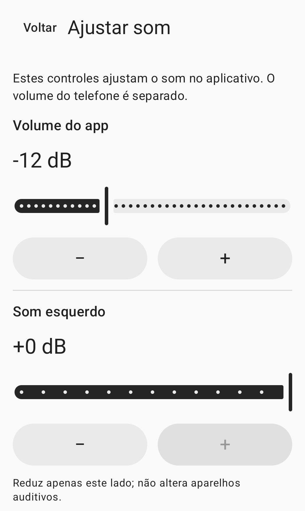

Controle manual do som ambiente
Som ao redor.Você ajusta.
O som do microfone do celular,nos fones que você escolher.Ajuste o nível, cada lado e o timbre.
Veja como usarAinda não lançado ao público.

Como usar
Conecte, ajuste e inicie.
Conecte
Conecte os fones a este celular e selecione a saída no app. O padrão é o modo com fio ou USB. Para Bluetooth, ative o modo experimental e selecione a saída conectada manualmente.
Ajuste
Ajuste o nível do app, cada lado e o timbre. O volume de mídia do celular é uma configuração separada. Coloque os fones e prepare-se com o volume baixo.
Inicie
Permita o acesso ao microfone, leia o aviso da sessão e toque no botão de consentimento e início. A permissão, por si só, não ativa o microfone. Pare pelo app ou pela notificação da sessão.
Ajustes de som
Escolha seus ajustes.
Os ajustes do app e o volume de mídia do celular são configurações independentes.
Nível do app
Ajuste no app o nível enviado aos fones selecionados. Confira também o volume de mídia do celular.
Esquerda e direita
Reduza cada lado separadamente. Esses controles não alteram as configurações dos próprios fones ou de um aparelho auditivo.
Timbre
Ajuste o timbre manualmente. O app não faz compensação automática com base em um exame de audição.
A imagem acima é um recorte da tela real de ajustes de som. Os controles do lado direito e do timbre não aparecem no recorte.
Perguntas frequentes
Antes de começar
Posso usar fones Bluetooth?
O Bluetooth é experimental. Conecte os fones a este celular, ative o modo experimental e selecione a saída manualmente. O atraso e a qualidade do som dependem do celular e dos fones.
Reconectar os fones reinicia a sessão?
Não. A perda da rota de áudio, do foco de áudio ou da permissão do microfone encerra a sessão. Reconectar os fones ou reabrir o app não reinicia a sessão. Inicie-a manualmente quando estiver pronto.
E se meus fones não aparecerem na lista?
Verifique a conexão de áudio de mídia Bluetooth deste celular e atualize a lista de saídas. Veja mais orientações na página de suporte.
Como excluo gravações ou dados do app?
O app não cria arquivos de gravação do microfone. Consulte o guia de dados locais para remover ajustes de som, histórico de solicitações de permissão ou o registro opcional do último teste.
Confira antes de usar.
Para adultos a partir de 18 anos com audição normal, o HearAssist é uma ferramenta de controle manual do som ambiente. Não se destina a compensar perda auditiva, substituir aparelhos auditivos, testar a audição, diagnosticar ou tratar condições de saúde.
A clareza da fala, a latência real e a segurança acústica não foram verificadas. Não há garantia de remoção completa do ruído ou de latência zero.
O app ainda não foi lançado publicamente nas lojas. Este site oferece informações do produto e suporte.